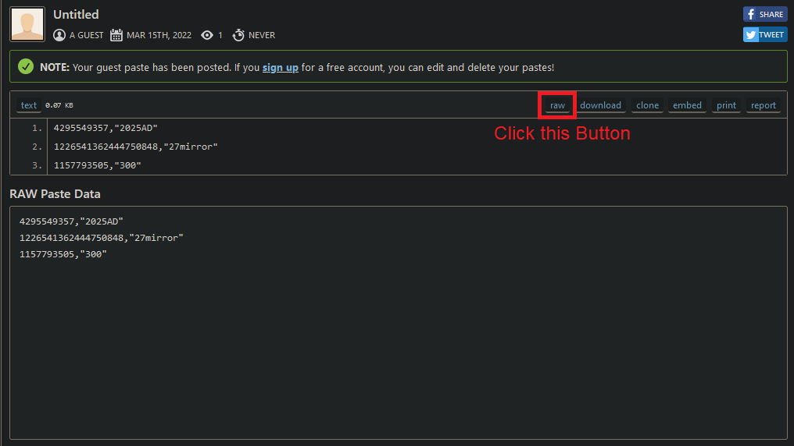

Block all Twitter advertising accounts from your timeline. (15.03.2022)
Notice
As of 31.03.2023 this method is not a good way of blocking Advertising on Twitter, you should just use something like uBlock Origin or alternative Apps.
Requirements
For following this Guide you need the following:
Program Setup
Let's start by getting the Program set up.
First, we need to install the requirements by running
pip3 install -r requirements.txt --user
After that you need to copy the .env.example file to .env
Now you need to get your Twitter Developer Credential and fill them in the .env file.
API_KEY=""
API_SECRET=""
ACCESS_TOKEN=""
ACCESS_TOKEN_SECRET=""
You need to get them on the Twitter Developer Site > your App > Keys and Tokens:

Twitter Data
Now get your Twitter Data Archive from here
After you have requested the Archive wait for the Notification Email. (This can take hours to days!)
Unpack the archive into the folder called export.
The directory structure should look like this now:
- export
- assets
- data
- .gitkeep
- Your archive.html
- .env
- main.py
...
Get the List
Now you just need to run
python3 main.py
The script will output a file called export.csv and tell you how many Advertising Accounts you have seen. For me, it was around 750 Accounts, but in this example, I will use a list of 3 Accounts.
Block the Accounts
To Block the Accounts you need to upload the export.csv content to pastebin or another site.
Paste the contents of export.csv in the input field and click create Paste.

Now you are redirected to your paste. Click on raw and copy the link.

Now go to this site https://twitter-blocklist-auth.glitch.me/ and log in.
Now you can paste the Url you have copied before in the field and click Submit.

After that the Page will tell you how many Accounts got blocked.

Back to top